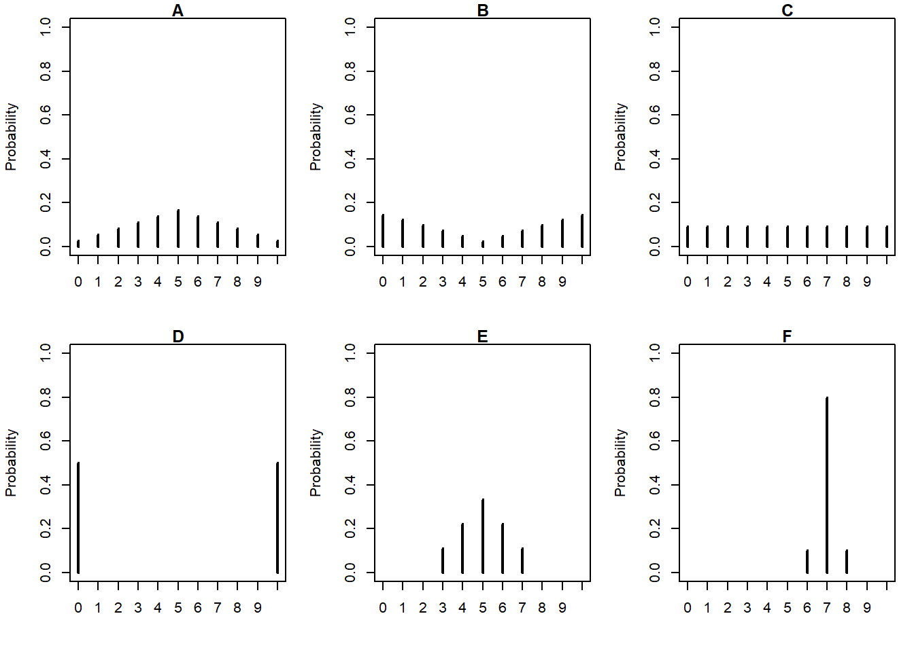

9 Variance and Standard Deviation
- The expected value, a.k.a. long run average value, is just one feature of a distribution.
- Random variables vary, and the distribution describes the entire pattern of variability.
- Roughly, standard deviation measures overall degree of variability in a single number, as the average distance from the mean.
- Technically, the variance is the long run average squared distance from the mean, and the standard deviation is the square root of the variance.
Example 9.1 We’ll motivate the calculation of variance by considering a small example. Say we have data on living area \(X\), measure in thousands of square feet, for a small sample of 10 houses.
| repetition | X | Deviation from mean | Squared deviation |
|---|---|---|---|
| 1 | 1.12 | ||
| 2 | 1.05 | ||
| 3 | 1.67 | ||
| 4 | 1.48 | ||
| 5 | 0.43 | ||
| 6 | 2.50 | ||
| 7 | 1.71 | ||
| 8 | 1.88 | ||
| 9 | 0.85 | ||
| 10 | 1.90 | ||
| Sum | |||
| Average |
- Compute the average of the \(X\) values.
- Compute the deviation from the mean for each \(X\) value.
- Compute the squared deviations.
- Compute the average squared deviation. This is called the variance. What are the measurement units?
- Compute the square root of the variance. This is called the standard deviation. What are the measurement units?
- The variance of a random variable \(X\) is \[\begin{align*} \text{Var}(X) & = \text{E}\left(\left(X-\text{E}(X)\right)^2\right)\\ & = \text{E}\left(X^2\right) - \left(\text{E}(X)\right)^2 \end{align*}\]
- The standard deviation of a random variable is \[\begin{equation*} \text{SD}(X) = \sqrt{\text{Var}(X)} \end{equation*}\]
- Variance is the long run average squared deviation from the mean.
- Standard deviation measures, roughly, the long run average distance from the mean. The measurement units of the standard deviation are the same as for the random variable itself.
- The definition \(\text{E}((X-\text{E}(X))^2)\) represents the concept of variance. However, variance is usually computed using the following equivalent but slightly simpler formula. \[ \text{Var}(X) = \text{E}\left(X^2\right) - \left(\text{E}\left(X\right)\right)^2 \]
- That is, variance is the expected value of the square of \(X\) minus the square of the expected value of \(X\).
- Variance has many nice theoretical properties. Whenever you need to compute a standard deviation, first find the variance and then take the square root at the end.
Example 9.2 An American roulette wheel has 18 black spaces, 18 red spaces, and 2 green spaces, all the same size and each with a different number on it. Xavier bets $1 on black. If the wheel lands on black, Xavier wins his bet back plus an additional $1; otherwise he loses the money he bet. Let \(X\) be Xavier’s net winnings (net of the initial bet of $1.)
- Find the distribution of \(X\).
- Compute \(\text{E}(X)\).
- Interpret \(\text{E}(X)\) in context.
- An expected profit for the casino of 5 cents per $1 bet seems small. Explain how casinos can turn such a small profit into billions of dollars.
- Compute \(\text{Var}(X)\).
- Compute and interpret \(\text{SD}(X)\).
Example 9.3 Continuing with roulette, Yasmin bets $1 on number 7. If the wheel lands on 7, Yasmin wins her bet back plus an additional $35; otherwise she loses the money she bet. Let \(Y\) be Yasmin’s net winnings (net of the initial bet of $1.)
- Find the distribution of \(Y\).
- Compute \(\text{E}(Y)\).
- How do the expected values of the two $1 bets—bet on black versus bet on 7—compare? Does that mean that the two $1 bets—bet on black versus bet on 7—are identical? If not, explain why not.
- Before doing any calculations, determine if \(\text{SD}(Y)\) is greater than, less than, or equal to \(\text{SD}(X)\). Explain.
- Compute \(\text{Var}(Y)\).
- Compute and interpret \(\text{SD}(Y)\).
- Standardization measures values in terms of “standard deviations away from the mean”
- This idea is particularly useful when comparing random variables with different measurement units but whose distributions have similar shapes. \[ \text{Standardized value} = \frac{\text{Value - Mean}}{\text{Standard deviation}} \]
- If \(X\) is a random variable with expected value \(\text{E}(X)\) and standard deviation \(\text{SD}(X)\), then the standardized random variable is \[ Z = \frac{X - \text{E}(X)}{\text{SD}(X)} \]
Example 9.4 The SAT and ACT are standardized tests; scores range from 200 to 1600 for the SAT and from 1 to 36 for the ACT. SAT scores have, approximately, a symmetric bell-shaped distribution with a mean of 1050 and a standard deviation of 200. ACT scores have, approximately, a symmetric bell-shaped distribution with a mean of 21 and a standard deviation of 5.5. Troy’s score on the SAT is 1500. Abed’s score on the ACT is 31. Who scored relatively better on their test?
- Compute and interpret the standardized value for Troy’s SAT score.
- Compute and interpret the standardized value for Abed’s ACT score.
- Who scored relatively better on their test?
9.1 Exercises
Exercise 9.1 The plots in Figure 9.1 summarize hypothetical distributions of quiz scores in six classes. All plots are on the same scale. Each quiz score is a whole number between 0 and 10 inclusive.
- Donny Dont says that C represents the smallest SD, since there is no variability in the heights of the bars. Do you agree that C represents “no variability”? Explain.
- What is the smallest possible value the SD of quiz scores could be? What would need to be true about the distribution for this to happen? (This scenario might not be represented by one of the plots.)
- Without doing any calculations, arrange the classes in order based on their SDs from smallest to largest.
- In one of the classes, the SD of quiz scores is 5. Which one? Why?
- Is the SD in F greater than, less than, or equal to 1? Why?
- Without doing any calculations, provide a ballpark estimate of SD in each case.
- The standard deviation in plot E is about 1.15. Suppose that the scores are curved by adding 2 points to every score. What is the standard deviation and variance of the revised scores?
- The standard deviation in plot E is about 1.15. Suppose that the scores are curved by multiplying every score by 2. What is the standard deviation and variance of the revised scores?
- Variance and linear rescaling: If \(X\) is a random variable and \(a, b\) are non-random constants then \[\begin{align*} \text{SD}(aX + b) & = |a|\text{SD}(X)\\ \text{Var}(aX + b) & = a^2\text{Var}(X) \end{align*}\]
Exercise 9.2 Recall the matching problem from Example 6.3, Exercise 7.3, and Exercise 8.2 with a general \(n\) and let \(X\) be the number of matches.
- Compute and interpret \(\text{Var}(X)\) and \(\text{SD}(X)\) when \(n=3\).
- Compute and interpret \(\text{Var}(X)\) and \(\text{SD}(X)\) for a general \(n\).
Exercise 9.3 Suppose that \(X\) has a Geometric(\(p\)) distribution.
- Without doing any computations, determine \(\text{Var}(X)\) if \(p=1\).
- As \(p\) decreases, does \(\text{Var}(X)\) increase or decrease? Why?
- If \(X\) has a Geometric distribution with parameter \(p\) then \(\text{Var}(X) = (1-p)/p^2\).